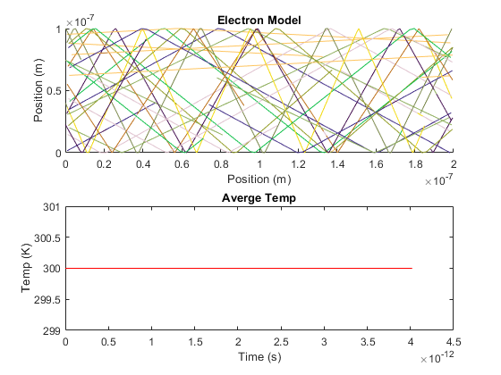
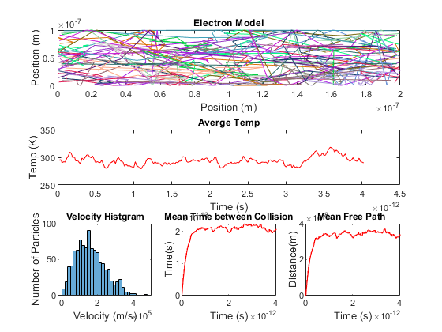
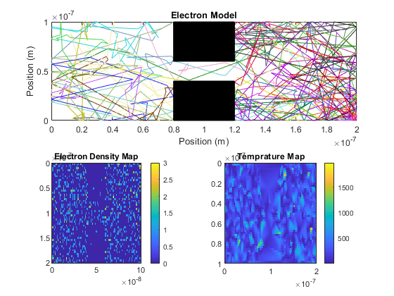
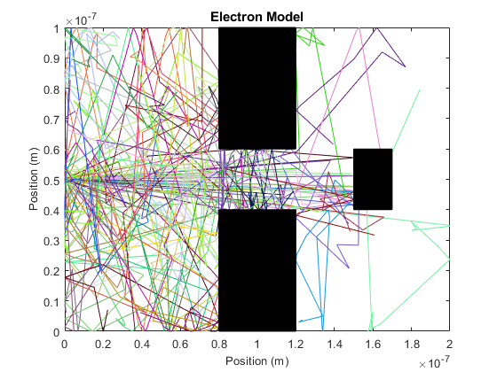

Assigment 1 - Monte-Carlo Modeling of Electron Transport
Jinseng Vanderkloot 101031534
Contents
- Simulation 1 - Basic Electron Modelling
- S1 Initialization of individual electron values
- S1 vth and MFP
- S1 Electrons position and velocity arrays
- S1 Electron Random Assignments
- S1 Main Loop
- Simulation 2 - Collisions with Mean Free Path (MFP)
- S2 Initialization of electron values
- S2 Main Loop
- Simulation 3 - Enhancements
- S3 Initialization of electron values
- S3 Main Loop
- Simulation 4 - Enhancements - Injection
- S4 Initialization of individual electron values
- S4 Electrons position and velocity arrays
- S4 Bottle Neck Boundary
- S4 Main loop
Simulation 1 - Basic Electron Modelling
Jinseng Vanderkloot 101031534
The purpose of Simulation 1 is to place electrons randomly inside the designated area. They will all have the same relative velocity but travel in random directions. When they make contact with the top or bottom boundary, they will "bounce" off them and travel in the opposite direction. When they encounter the side walls, the electron will travel from one side to the other to maintain the electron density in the designated area. Pauses removed from report simulation.
S1 Initialization of individual electron values
clc clear all close all m0 = 9.10938215e-31; % electron mass mn = 0.26*m0; % Effective mass Temp = 300; % Inital Temp (K) kb = 1.3806504e-23; % Boltzmann constant tmn = 0.2e-12; % Mean time between collision
S1 vth and MFP
%Thermal Velocity (Question 1.A) vt=sqrt((2*kb*Temp)/mn); % Sim in 2D so (2*kb*Temp), 3D is (3*kb*Temp) fprintf("Thermal Velocity = %d m/s \n", vt); % Mean free path (Velocity * minimum time between collision) (Question 1.B) meanFreePath = vt * tmn; fprintf("Mean free path = %d \n", meanFreePath);
Thermal Velocity = 1.870193e+05 m/s Mean free path = 3.740385e-08
S1 Electrons position and velocity arrays
% Plotting Area wArea = 200e-9; lArea = 100e-9; numElec = 1000; %Number of simulated Electrons numEPlot = 10; %Number of plotted Electrons dt = (lArea*wArea); %Typically 1/100 of region size stepsTot = 100; %Total amount of steps (1000 was a long simulation) tTot= stepsTot*dt; %Total Simulation time x = zeros(1,numElec); %Inital X matrix y = zeros(1,numElec); %Inital y matrix vx = zeros(1,numElec); %Inital velocity x matrix vy = zeros(1,numElec); %Inital velocity y matrix vtot = zeros(1,numElec); %Inital velocity matrix colors = rand(numElec,3); %Color assignment for each electron
S1 Electron Random Assignments
for cnt = 1:numElec x(cnt)=rand()*wArea; y(cnt)=rand()*lArea; angle = (2*pi*rand()); vx(cnt)=sqrt(vt^2)*cos(angle); % velocity * random direction vy(cnt)=sqrt(vt^2)*sin(angle); % velocity * random direction vtot(cnt)= sqrt (vx(cnt)^2)+(vy(cnt)^2); end
S1 Main Loop
t=0; intCNT = 2; eTemp(1) = Temp; while t < tTot t = t + dt; %Store old position oldx = x; oldy = y; %Update to new position x(1:numElec) = x(1:numElec) + (vx(1:numElec).*dt); y(1:numElec) = y(1:numElec) + (vy(1:numElec).*dt); vtot(1:numElec)= sqrt ((vx(1:numElec).^2)+(vy(1:numElec).^2)); %Apply boundary conditions for check = 1:numElec %If bottom contact, bounce off in opposite direction if (y(check)<=0) y(check) = 0; vy(check) = -vy(check); end %If top contact, bounce off in opposite directio if (y(check)>=lArea) y(check) = lArea; vy(check) = -vy(check); end %if left side of box, come out right side if(x(check)<=0) x(check) = x(check) + wArea; end %if right side of box, come out left side if(x(check)>=wArea) x(check) = x(check) - wArea; end end %Plot Boundary and map some electrons for Eplot = 1:numEPlot subplot (2,1,1) %if the electron went out of sides and back on other side, do not %draw line if abs(oldx(Eplot)-x(Eplot))<(wArea/2) p = plot([oldx(Eplot),x(Eplot)],[oldy(Eplot),y(Eplot)]); end p.Color=colors(Eplot,:); axis([0,wArea,0,lArea]); title('Electron Model'), xlabel('Position (m)', 'FontSize', 10), ylabel('Position (m)', 'FontSize', 10); hold on; end %Plot Averge Temprature in the system subplot (2,1,2) Time(:,intCNT) = t; allT = ((vtot(:).^2).*mn)./(2*kb); eTemp(:,intCNT) = mean(allT); plot(Time,eTemp,"r"); title('Averge Temp'),xlabel('Time (s)', 'FontSize', 10), ylabel('Temp (K)', 'FontSize', 10), ylim([299,301]); hold on; intCNT = intCNT +1; end
Simulation 2 - Collisions with Mean Free Path (MFP)
Jinseng Vanderkloot 101031534
%The purpose of this simulation is to allow the electrons to scatter as if %making contact with another electron. This is done by randomizing the %velocity in x and y when a randomly generated value is less then the %probability of scattering. The temperature of the systems is monitored over %time as the velocities of the particles will undergo net change. The Mean %free path and mean time between collisions is also tracked (about the same %but one is distance and the other is time). A histogram is produced to %show the distribution of the velocities. Need to fix issue with temp %starting at about 600K but its noramlises towards to appropriate 300K %value as time continues.
S2 Initialization of electron values
clc clear all close all %Initial m0 = 9.10938215e-31; % electron mass mn = 0.26*m0; % Effective mass Temp = 300; % Inital Temp (K) kb = 1.3806504e-23; % Boltzmann constant tmn = 0.2e-12; % Mean time between collision % Region Area wArea = 200e-9; lArea = 100e-9; %Thermal Velocity (Question 1.A) vt=sqrt((2*kb*Temp)/mn); % Sim in 2D so (2*kb*Temp), 3D is (3*kb*Temp) %Electrons position and velocity arrays numElec = 1000; %Number of simulated Electrons numEPlot = 20; %Number of plotted Electrons dt = (lArea*wArea); %Typically 1/100 of region size stepsTot = 80; %Total amount of steps (1000 was a long simulation) tTot= stepsTot*dt; %Total Simulation time x = zeros(1,numElec); %Inital X matrix y = zeros(1,numElec); %Inital y matrix vx = zeros(1,numElec); %Inital velocity x matrix vy = zeros(1,numElec); %Inital velocity y matrix vtot = zeros(1,numElec); %Inital velocity matrix avgTemp=0; %Set average Temp to 0 %Probability of Scatter scatOn = 1; %Turn Scatter on (1) or off(0) Pscatter = 1-exp(-dt/tmn); %Scatter Equation tScatter = zeros(1,numElec); %track scatter for each particle %Electron Graph initial for cnt = 1:numElec x(cnt)=rand()*wArea; y(cnt)=rand()*lArea; vx(cnt)=sqrt(vt^2)*randn(); % velocity * Gaussian dist vy(cnt)=sqrt(vt^2)*randn(); % velocity * Gaussian dist %Varience = sqrt(kT/m) - Do we use this? vtot(cnt)= sqrt (vx(cnt)^2)+(vy(cnt)^2); colors= rand(numElec,3); %Random Color for each electron end
S2 Main Loop
t=0; intCNT = 1; %Counter with time while t < tTot t = t + dt; %Store old position oldx = x; oldy = y; %Update to new position x(1:numElec) = x(1:numElec) + (vx(1:numElec).*dt); y(1:numElec) = y(1:numElec) + (vy(1:numElec).*dt); vtot(1:numElec)= sqrt ((vx(1:numElec).^2)+(vy(1:numElec).^2)); for check = 1:numElec %Scatter if scatOn==1 if Pscatter > rand() vx(check)=sqrt(vt^2 /2)*randn(); vy(check)=sqrt(vt^2 /2)*randn(); tScatter(check)= 0; %If collision, time goes to 0 else tScatter(check)= tScatter(check) + dt; %track time increaing while no collision end end %Apply boundary conditions %If bottom contact, bounce off in opposite direction if (y(check)<=0) y(check) = 0; vy(check) = -vy(check); end %If top contact, bounce off in opposite directio if (y(check)>=lArea) y(check) = lArea; vy(check) = -vy(check); end %if left side of box, come out right side if(x(check)<=0) x(check) = x(check) + wArea; end %if right side of box, come out left side if(x(check)>=wArea) x(check) = x(check) - wArea; end end %Plot Boundary and map some electrons for Eplot = 1:numEPlot figure(1) subplot (3,1,1) %if the electron went out of sides and back on other side, do not %draw line if abs(oldx(Eplot)-x(Eplot))<(wArea/2) p = plot([oldx(Eplot),x(Eplot)],[oldy(Eplot),y(Eplot)]); end p.Color=colors(Eplot,:); axis([0,wArea,0,lArea]); title('Electron Model'), xlabel('Position (m)', 'FontSize', 10), ylabel('Position (m)', 'FontSize', 10); hold on; end %Calc Average Temp for all t and Plot subplot (3,1,2) Time(:,intCNT) = t; allT = ((vtot(:).^2).*mn)./(2*kb); avgTemp(:,intCNT) = mean(allT); plot(Time,avgTemp,"r"); title('Averge Temp'),xlabel('Time (s)', 'FontSize', 10), ylabel('Temp (K)', 'FontSize', 10), ylim([250,600]); hold on; intCNT = intCNT +1; %Histogram of velocities over time if intCNT > (stepsTot-5) subplot(3,3,7) histogram([vtot(:)],30) title('Velocity Histgram'),xlabel('Velocity (m/s)', 'FontSize', 10), ylabel('Number of Particles', 'FontSize', 10); end %Mean time between collision Time(:,intCNT) = t; allScat(:,intCNT) = mean(tScatter(:)); subplot(3,3,8) plot(Time,allScat,'r'); title('Mean Time between Collision'),xlabel('Time (s)', 'FontSize', 10), ylabel('Time(s)', 'FontSize', 10); hold on; %Mean Free Path over time Time(:,intCNT) = t; mfp(:,intCNT) = mean(tScatter(:))*mean(vtot(:)); subplot(3,3,9) plot(Time,mfp,'r'); title('Mean Free Path '),xlabel('Time (s)', 'FontSize', 10), ylabel('Time(s)', 'FontSize', 10); hold on; end
Simulation 3 - Enhancements
Jinseng Vanderkloot 101031534
%Simulation 3 addssolid blocks which electrons will bounce when making %contact. The electrons will continue to scatter. There should be some type %of re-thermalization electrons make contact with the boxes so a value is %added to reduce the velocity therefore reducing temprature. A electron %density map and temprature map are displayed. (Some inital values may be %changed to reduce simulation time. To improve in the future, use linear %indexing). Some bleeding does exsist looking at the density map.
S3 Initialization of electron values
clc clear all close all %Initial m0 = 9.10938215e-31; % electron mass mn = 0.26*m0; % Effective mass Temp = 300; % Inital Temp (K) kb = 1.3806504e-23; % Boltzmann constant tmn = 0.2e-12; % Mean time between collision % Region Area wArea = 200e-9; lArea = 100e-9; %Thermal Velocity (Question 1.A) vt=sqrt((2*kb*Temp)/mn); % Sim in 2D so (2*kb*Temp), 3D is (3*kb*Temp) %Electron motion numElec = 1000; %Number of simulated Electrons numEPlot = 40; %Number of plotted Electrons dt = (lArea*wArea); %Typically 1/100 of region size stepsTot = 50; %Total amount of steps (1000 was a long simulation) tTot= stepsTot*dt; %Total Simulation time x = zeros(1,numElec); %Inital X matrix y = zeros(1,numElec); %Inital y matrix vx = zeros(1,numElec); %Inital velocity x matrix vy = zeros(1,numElec); %Inital velocity y matrix vtot = zeros(1,numElec); %Inital velocity matrix avgTemp=0; %Set average Temp to 0 %Probability of Scatter scatOn = 1; %Turn Scatter on (1) or off(0) Pscatter = 1-exp(-dt/tmn); %Scatter Equation tScatter = zeros(1,numElec); %Bottle Neck Boundary reduced to prevent bleeding % X limit (no particle between X1 and X2 - Cosider Y limits) boxX1=80e-9; boxX2=120e-9; % Y Limit (no particles between 0 and Y1 and Y2 to Y limit) boxY1 = 40e-9; boxY2 = 60e-9; %Electron Graph for cnt = 1:numElec x(cnt)=rand()*wArea; y(cnt)=rand()*lArea; %If the electrons are place in the box, re-roll position while (x(cnt)>=boxX1 && x(cnt)<=boxX2 && (y(cnt)<=boxY1 || y(cnt>=boxY2))) %Relocate them if in boundary x(cnt)=rand()*wArea; y(cnt)=rand()*lArea; end vx(cnt)=sqrt(vt^2)*randn(); % velocity * Gaussian dist vy(cnt)=sqrt(vt^2)*randn(); % velocity * Gaussian dist %Varience = sqrt(kT/m) - Do we use this? vtot(cnt)= sqrt (vx(cnt)^2)+(vy(cnt)^2); colors= rand(numElec,3); end %Boundary Energy/Velocity loss coefficient (reduction in velocity = %reduction in temprature) vloss = 0.95;
S3 Main Loop
t=0; intCNT = 1; %Counter with time while t < tTot t = t + dt; %Store old position oldx = x; oldy = y; %Update to new position x(1:numElec) = x(1:numElec) + (vx(1:numElec).*dt); y(1:numElec) = y(1:numElec) + (vy(1:numElec).*dt); vtot(1:numElec)= sqrt ((vx(1:numElec).^2)+(vy(1:numElec).^2)); for check = 1:numElec %Scatter if scatOn==1 if Pscatter > rand() vx(check)=sqrt(vt^2 /2)*randn(); vy(check)=sqrt(vt^2 /2)*randn(); tScatter(check)= 0; %If collision, time goes to 0 else tScatter(check)= tScatter(check) + dt; %track time increaing while no collision end end %Apply Boundary Conditions %If bottom contact, bounce off in opposite direction if (y(check)<=0) y(check) = 0; vy(check) = -vy(check); end %If top contact, bounce off in opposite directio if (y(check)>=lArea) y(check) = lArea; vy(check) = -vy(check); end %if left side of box, come out right side if(x(check)<=0) x(check) = 0; vx(check) = -vx(check); end %if right side of box, come out left side if(x(check)>=wArea) x(check) = wArea; vx(check) = -vx(check); end %Apply bottle neck conditions %If contact on left walls of boundary (not in Gap) if (oldx(check)<boxX1 && x(check)>=boxX1 && (y(check)<= boxY1 || y(check)>= boxY2)) x(check)=boxX1; vx(check) = -(vx(check)*vloss); end %If contact on right walls of boundary (not in Gap) if (oldx(check)>boxX2 && x(check)<=boxX2 && (y(check)<= boxY1 || y(check)>= boxY2)) x(check)=boxX2; vx(check) = -(vx(check)*vloss); end %If contact with bottom boundary in gap if (x(check)>boxX1 && x(check)< boxX2 && oldy(check)>boxY1 && y(check)<= boxY1) y(check)= boxY1; vy(check) = -(vy(check)*vloss); end %If contact with top boundary in gap if (x(check)>boxX1 && x(check)< boxX2 && oldy(check)<boxY2 && y(check)>=boxY2) y(check)=boxY2; vy(check) = -(vy(check)*vloss); end end %Plot Boundary and map some electrons for Eplot = 1:numEPlot figure(1) subplot (2,1,1) %if the electron went out of sides and back on other side, do not %draw line if abs(oldx(Eplot)-x(Eplot))<(wArea/2) p = plot([oldx(Eplot),x(Eplot)],[oldy(Eplot),y(Eplot)]); end rectangle('Position',[boxX1 0 (boxX2-boxX1) boxY1],'FaceColor',[0 0 0]) rectangle('Position',[boxX1 boxY2 (boxX2-boxX1) (lArea-boxY2)],'FaceColor',[0 0 0]) p.Color=colors(Eplot,:); axis([0,wArea,0,lArea]); title('Electron Model'), xlabel('Position (m)', 'FontSize', 10), ylabel('Position (m)', 'FontSize', 10); hold on; end %Electron Density Map eMapX=linspace(0, wArea, 100); eMapY=linspace(0, lArea, 50); EDM=histcounts2(y,x,eMapY,eMapX); subplot(2,2,3) imagesc(eMapY,eMapX,EDM),colorbar,title('Electron Density Map'); %Electron Temprature Map allT = ((vtot(:).^2).*mn)./(2*kb); xv = linspace(min(x), max(x),100); yv = linspace(min(y), max(y),50); [X,Y] = meshgrid(xv,yv); ETM=griddata(x,y,allT,X,Y); subplot(2,2,4); imagesc(xv,yv,ETM),colorbar,title("Temprature Map") axis([0, wArea, 0 lArea]); end
Warning: Duplicate data points have been detected and removed - corresponding values have been averaged.
Simulation 4 - Enhancements - Injection
JinsengVanderkloot - 101031534
%Section 3-2 has the electrons injected from one point and another box is %added. (Some value are changed or reduced to decrease simulation times)
S4 Initialization of individual electron values
clc clear all close all m0 = 9.10938215e-31; % electron mass mn = 0.26*m0; % Effective mass Temp = 300; % Inital Temp (K) kb = 1.3806504e-23; % Boltzmann constant tmn = 0.2e-12; % Mean time between collision % Region Area wArea = 200e-9; lArea = 100e-9; %Thermal Velocity (Question 1.A) vt=sqrt((2*kb*Temp)/mn); % Sim in 2D so (2*kb*Temp), 3D is (3*kb*Temp)
S4 Electrons position and velocity arrays
numElec = 50; %Number of simulated Electrons numEPlot = 50; %Number of plotted Electrons dt = (lArea*wArea); %Typically 1/100 of region size stepsTot = 100; %Total amount of steps (1000 was a long simulation) tTot= stepsTot*dt; %Total Simulation time x = zeros(1,numElec); %Inital X matrix y = zeros(1,numElec); %Inital y matrix vx = zeros(1,numElec); %Inital velocity x matrix vy = zeros(1,numElec); %Inital velocity y matrix vtot = zeros(1,numElec); %Inital velocity matrix avgTemp=0; %Set average Temp to 0 %Electron color assignment for cnt = 1:numElec colors= rand(numElec,3); y(cnt) = 50e-9; end %Probability of Scatter scatOn = 1; %Turn Scatter on (1) or off(0) Pscatter = 1-exp(-dt/tmn); %Scatter Equation tScatter = zeros(1,numElec);
S4 Bottle Neck Boundary
X limit (no particle between X1 and X2 - Cosider Y limits)
boxX1=80e-9; boxX2=120e-9; % Y Limit (no particles between 0 and Y1 and Y2 to Y limit) boxY1 = 40e-9; boxY2 = 60e-9; %New Box boxX3 = 150e-9; boxX4 = 170e-9; boxY3 = 40e-9; boxY4 = 60e-9; %Boundary Energy/Velocity loss coefficient, when hitting wall, increase %velocity = increase temp, decrease velocity = decrease temp vloss = 0.9;
S4 Main loop
t=0; intCNT = 1; %Counter with time while t < tTot t = t + dt; %Store old position oldx = x; oldy = y; %Inject one elctron for each loop iteration if intCNT <= numElec %Add a velocity for injected electron but have it dominate in the y %direction to go towards the gap vx(intCNT)=0.9*sqrt(vt^2)*abs(randn()); % velocity * Gaussian dist vy(intCNT)=0.1*sqrt(vt^2)*randn(); % velocity * Gaussian dist vtot(intCNT)= sqrt (vx(intCNT)^2)+(vy(intCNT)^2); end %Update to new position x(1:numElec) = x(1:numElec) + (vx(1:numElec).*dt); y(1:numElec) = y(1:numElec) + (vy(1:numElec).*dt); vtot(1:numElec)= sqrt ((vx(1:numElec).^2)+(vy(1:numElec).^2)); for check = 1:numElec %Scatter if scatOn==1 if Pscatter > rand() if vx ~= 0 vx(check)=sqrt(vt^2 /2)*randn(); vy(check)=sqrt(vt^2 /2)*randn(); end end end %Apply Boundary Conditions %If bottom contact, bounce off in opposite direction if (y(check)<=0) y(check) = 0; vy(check) = -vy(check); end %If top contact, bounce off in opposite directio if (y(check)>=lArea) y(check) = lArea; vy(check) = -vy(check); end %if left side of box, come out right side if(x(check)<=0) x(check) = 0; vx(check) = -vx(check); end %if right side of box, come out left side if(x(check)>=wArea) x(check) = wArea; vx(check) = -vx(check); end %Apply bottle neck conditions %If contact on left walls of boundary (not in Gap) if (oldx(check)<boxX1 && x(check)>=boxX1 && (y(check)<= boxY1 || y(check)>= boxY2)) x(check)=boxX1; vx(check) = -(vx(check)*vloss); end %If contact on right walls of boundary (not in Gap) if (oldx(check)>boxX2 && x(check)<=boxX2 && (y(check)<= boxY1 || y(check)>= boxY2)) x(check)=boxX2; vx(check) = -(vx(check)*vloss); end %If contact with bottom boundary in gap if (x(check)>boxX1 && x(check)< boxX2 && oldy(check)>boxY1 && y(check)<= boxY1) y(check)= boxY1; vy(check) = -(vy(check)*vloss); end %If contact with top boundary in gap if (x(check)>boxX1 && x(check)< boxX2 && oldy(check)<boxY2 && y(check)>=boxY2) y(check)=boxY2; vy(check) = -(vy(check)*vloss); end %Apply bottle neck conditions for new box if (oldx(check)<boxX3 && x(check)>=boxX3 && (y(check)<= boxY4 || y(check)>= boxY3)) x(check)=boxX3; vx(check) = -(vx(check)*vloss); end %If contact on right walls of boundary (not in Gap) if (oldx(check)>boxX4 && x(check)<=boxX4 && (y(check)<= boxY4 || y(check)>= boxY3)) x(check)=boxX4; vx(check) = -(vx(check)*vloss); end %If contact with bottom boundary in gap if (x(check)>boxX3 && x(check)< boxX4 && oldy(check)>boxY4 && y(check)<= boxY4) y(check)= boxY4; vy(check) = -(vy(check)*vloss); end %If contact with top boundary in gap if (x(check)>boxX3 && x(check)< boxX4 && oldy(check)<boxY3 && y(check)>=boxY3) y(check)=boxY3; vy(check) = -(vy(check)*vloss); end end %Plot Boundary and map some electrons for Eplot = 1:numEPlot figure(1) %if the electron went out of sides and back on other side, do not %draw line if abs(oldx(Eplot)-x(Eplot))<(wArea/2) p = plot([oldx(Eplot),x(Eplot)],[oldy(Eplot),y(Eplot)]); end rectangle('Position',[boxX1 0 (boxX2-boxX1) boxY1],'FaceColor',[0 0 0]) rectangle('Position',[boxX1 boxY2 (boxX2-boxX1) (lArea-boxY2)],'FaceColor',[0 0 0]) rectangle('Position',[boxX3 boxY3 (boxX4-boxX3) (boxY4-boxY3)],'FaceColor',[0 0 0]) p.Color=colors(Eplot,:); axis([0,wArea,0,lArea]); title('Electron Model'), xlabel('Position (m)', 'FontSize', 10), ylabel('Position (m)', 'FontSize', 10); hold on; end intCNT = intCNT + 1; end